Persönliche Schutzausrüstungen zum Schutz gegen Absturz werden in einem Auffangsystem so kombiniert und eingesetzt, dass:
Haltegurte sind als Bestandteil in einem Auffangsystem generell verboten.
Steigbolzen und Sprossen von Steigleitern sowie Geländer erfüllen in der Regel die vorgenannten Anforderungen nicht und sind somit keine Anschlagpunkte.
Anschlagpunkte werden, soweit möglich oberhalb des Mitarbeiters gewählt, um die mögliche Absturzhöhe in die PSAgA so gering wie möglich zu halten.
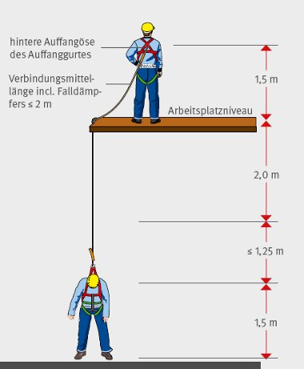
Abb. 14
Der Anschlagpunkt muss stets so gewählt werden, dass der Abstürzende mit keinem Körperteil auf einem tiefer liegenden Bauteil oder dem Boden aufschlagen kann. Die maximale Länge des Verbindungsmittels einschließlich Falldämpfer darf 2 Meter (siehe Abs. 5.3.2) niemals überschreiten.
Im Bildbeispiel befindet sich der Anschlagpunkt ungünstigerweise auf Höhe des Standortes des Versicherten. Die Auffangöse seines Auffanggurtes befindet sich auf einer Höhe von ~ 1,5 m. Im Absturzfall fällt der Versicherte somit ~ 3,5 m nach unten. Hinzu kommt die Länge des aufreißenden Falldämpfers von bis zu 1,25 m (Ein 0,5 m langer Falldämpfer kann auf ~ 1,75 m Länge aufreißen.). Die gesamte Absturzhöhe beträgt somit ~ 4,75 m.
Persönliche Schutzausrüstungen gegen Absturz dürfen ausschließlich in Auffangsystemen zum Einsatz kommen.
Auffangsysteme bestehen aus einem Auffanggurt und weiteren verschiedenen verbindenden Teilsystemen. Das Auffangsystem muss sicherstellen, dass abstürzende Personen sicher aufgefangen werden.
Die Auffangsysteme gemäß Abb. 15 bis 18 werden unterschieden:
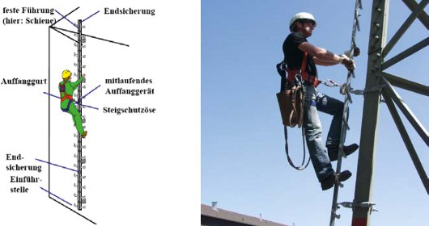
Abb. 15
Auffangsystem mit Steigschutzeinrichtung als feste Führung. Feste Führungen können als Schienensysteme oder als gespannte Stahlseile ausgeführt sein. Die Sicherung erfolgt über ein mitlaufendes Auffanggerät, das mit der Steigschutzöse des Auffanggurtes verbunden ist.
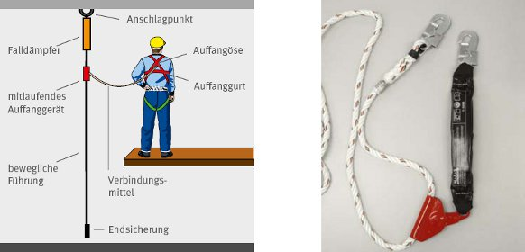
Abb. 16
Auffangsystem mit mitlaufendem Auffanggerät an beweglicher Führung.
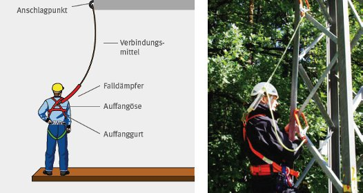
Abb. 17
Auffangsystem mit Falldämpfer: Der Auffanggurt wird über ein Verbindungsmittel und einen Falldämpfer mit einem Anschlagpunkt am Mast verbunden. Der Anschlagpunkt liegt möglichst oberhalb des Arbeitsplatzes.
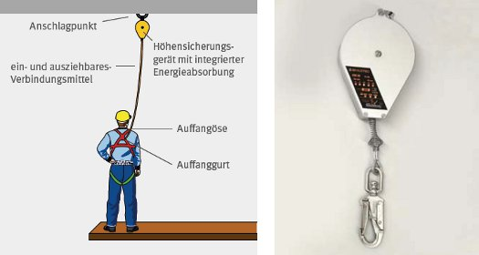
Abb. 18
Auffangsysteme mit Höhensicherungsgeräten (DIN EN 360) sind an Freileitungen nur unter bestimmten Bedingungen einsetzbar (für Arbeiten an Isolatoren, bei denen die Höhensicherungsgeräte senkrecht oberhalb des Arbeitsbereiches, beispielsweise an einer Traverse, angebracht werden können).
Es werden Auffanggurte ausgewählt und eingesetzt, die den unterschiedlichen Anwendungsbedingungen beim Besteigen von und Arbeiten auf sowie Retten von Freileitungen gerecht werden. Die ist beispielsweise gewährleistet, wenn die Auffanggurte über
verfügen.
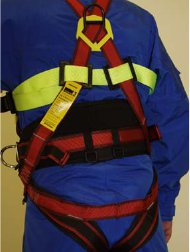
Abb. 19
Beispiel für einen Auffanggurt nach DIN EN 361 mit ausgeprägter Rückenstütze.
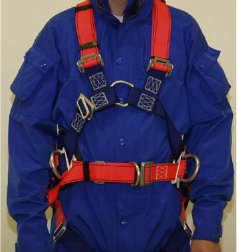
Abb. 20
Beispiel für einen Auffanggurt nach DIN EN 361 mit vorderer Auffangöse und einer Steigschutzöse. Der Bauchgurt ist mit zwei seitlichen Halteösen ausgestattet.
Auffanggurte dürfen in Haltefunktion nur dann benutzt werden, wenn der Mitarbeiter gleichzeitig in der Auffangfunktion gesichert ist. Hierzu muss die Auffangöse des Gurtes mit einem Anschlagpunkt am Mast verbunden sein.
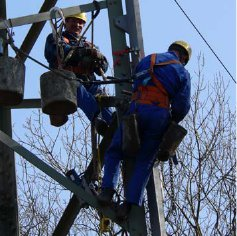
Abb. 21
Die Versicherten sind durch Auffanggurte in der Auffangfunktion gesichert. Mit Halteseilen positionieren sie sich an der Arbeitsstelle.
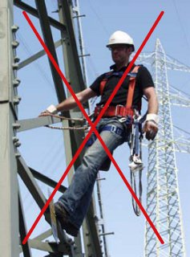
Abb. 22
Im Bildbeispiel gibt es keinen Schutz gegen Absturz. Es fehlt eine Sicherung über den Auffanggurt in der Auffangfunktion. Die Befestigung des Halteseils an einer Halteöse kann im Absturzfall zu erheblichen Verletzungen des Versicherten führen.
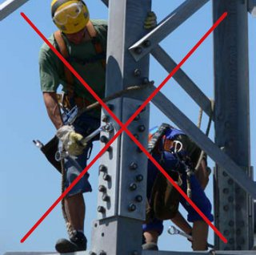
Abb. 23
Achtung: Keine Absturzsicherung, da der Auffanggurt nur in Haltefunktion eingesetzt wird!
Verbindungsmittel nach EN 354 verbinden den Auffanggurt mit einem Anschlagpunkt oder mit einer beweglichen Führung.
Verbindungsmittel müssen geeignete Endverbindungen haben und dürfen einschließlich Falldämpfer nicht länger als 2 m sein. Bei ungünstigen Einsatzverhältnissen ist hierbei ein Absturz über eine Höhe von 4m (2 x Verbindungsmittellänge) möglich. Bei größeren Absturzhöhen kann eine ordnungsgemäße Funktion der PSAgA nicht mehr gewährleistet sein.
Verbindungsmittel dürfen nicht geknotet werden, da hierdurch die Tragfähigkeit erheblich verringert wird.
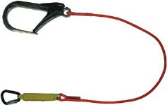
Abb. 24
Verbindungsmittel mit integriertem Falldämpfer
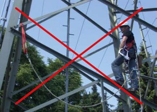
Abb. 25
Beispiel für einen gefährlichen Einsatz eines durch eine bewegliche Führung verlängerten Verbindungsmittels. Im Falle eines Absturzes ergibt sich eine Sturzhöhe von deutlich über 4 m. Zusätzlich gerät der Versicherte in eine Pendelbewegung mit Aufprall auf die Mastkonstruktion.
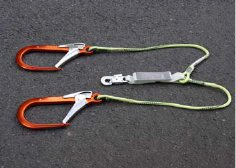
Abb. 26
Verbindungsmittel in Y-Ausführung („Y-Seil“) mit Falldämpfer zum gesicherten Wechseln von Anschlagpunkten.
Falldämpfer sind Bestandteil eines Auffangsystems und verringern die bei einem Absturz auf den menschlichen Körper einwirkenden Kräfte auf ein verträgliches Maß von ≤ 6kN. Verbindungsmittel mit Falldämpfer werden so angeschlagen, dass die Funktion der Falldämpfer nicht beeinträchtigt wird.
Beim Besteigen von und Arbeiten auf Freileitungen hat sich der Einsatz von Bandfalldämpfern aufgrund ihrer Witterungs- und Verschmutzungsunempfindlichkeit bewährt. Im Absturzfall führt das Aufreißen des Bandfalldämpfers zu einer Verlängerung der Sturzstrecke. Dies ist bei der Auswahl des Anschlagpunktes zu berücksichtigen.
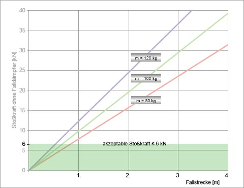
Abb. 27
Während beim Einsatz eines Falldämpfers die Stoßkräfte auf ≤ 6 kN begrenzt werden, wird dieser Stoßkraftwert ohne Falldämpfer bereits bei einer Sturzhöhe von 1 m deutlich überschritten.
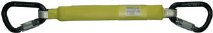
Abb. 28
Beispiel für einen Bandfalldämpfer nach DIN EN 355.
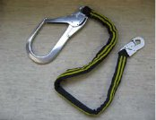
Abb. 29
Beispiel für einen Falldämpfer, in dem die Fallenergie in einem Fangstoß dämpfenden speziellen Traggeflecht absorbiert wird.
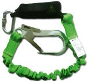
Abb. 30
Kombination aus Bandfalldämpfer und einem elastisch ausgeführten Verbindungsmittel.
Verbindungselemente nach DIN EN 362 lassen sich öffnen und verbinden einzelne Komponenten eines Auffangsystems miteinander.
Es sind Verbindungselemente mit mindestens einer zweifach und automatisch wirkenden Verschlusssicherung einzusetzen. An nur selten zu lösenden Verbindungsstellen sind dreifach wirkende Verschlusssicherungen zu bevorzugen.
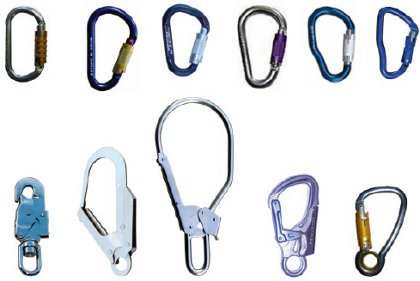
Abb. 31
Unterschiedliche Bauformen von Karabinerhaken mit zwei- oder dreifach automatisch wirkenden Verschlusssicherungen.
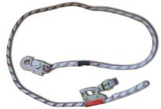
Abb. 32
Beispiel für ein Halteseil mit einem zweifach gesicherten Karabinerhaken am Seilkürzer sowie einem automatisch zweifach gesicherten Karabiner am freien Ende.
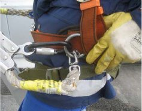
Abb. 33
Beispiel für eine zusätzliche Sicherung des freien Endes eines Halteseils durch einen Wirbelverbinder an der Halteöse eines Auffanggurtes.
Da an Freileitungsmasten keine konstruktiv vorgesehenen Anschlagpunkte vorhanden sind, werden diese durch den Einsatz von Hilfsmitteln an Konstruktionsteilen geschaffen.
Die Konstruktionsteile müssen in der Lage sein, die bei Verwendung auftretenden Lasten aufnehmen zu können.
Die Hilfsmittel werden bestimmungsgemäß nach Angaben des Herstellers in der Gebrauchsanleitung eingesetzt.
Die nachfolgenden Sicherungsmethoden zum Einsatz von Auffangsystemen beim Besteigen von und Arbeiten auf Freileitungen stellen Lösungsbeispiele als Ergebnis der Gefährdungsbeurteilung (siehe Abschnitte 3.1 und 3.2) dar. Im Rahmen der Gefährdungsbeurteilung und der Auswahl, bzw. Kombination der Sicherungsmethoden ist eine auf die speziellen betrieblichen Randbedingungen zugeschnittene Risikobeurteilung durchzuführen.
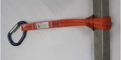
Abb. 34
Bandschlaufe zur Schaffung eines Anschlagpunktes.
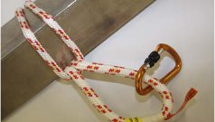
Abb. 35
Seilschlaufe zur Schaffung eines Anschlagpunktes.
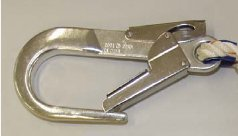
Abb. 36
Beispiele für Rohrhaken zur Schaffung eines Anschlagpunktes. Die Baugröße gestattet auch ein Umgreifen großer Mastbauteile.
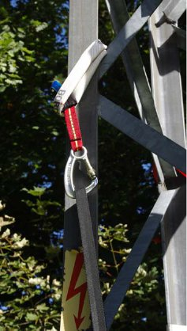
Abb. 37
Beispiel einer speziellen Bandschlaufe für erhöhte Belastungen.
Im Belastungsfall können Band- und Seilschlaufen durch Scherkräfte in Konstruktionsteilen übermäßig belastet werden. Es empfiehlt sich ein Einsatz speziell für diese Verwendung ausgewiesener Schlaufen.